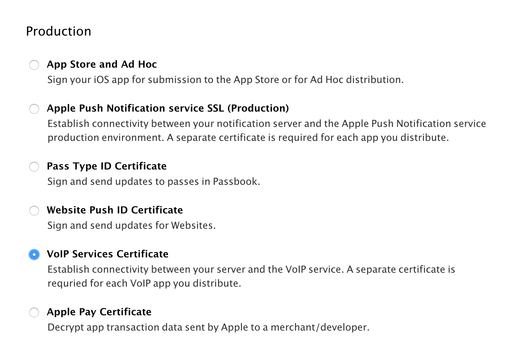
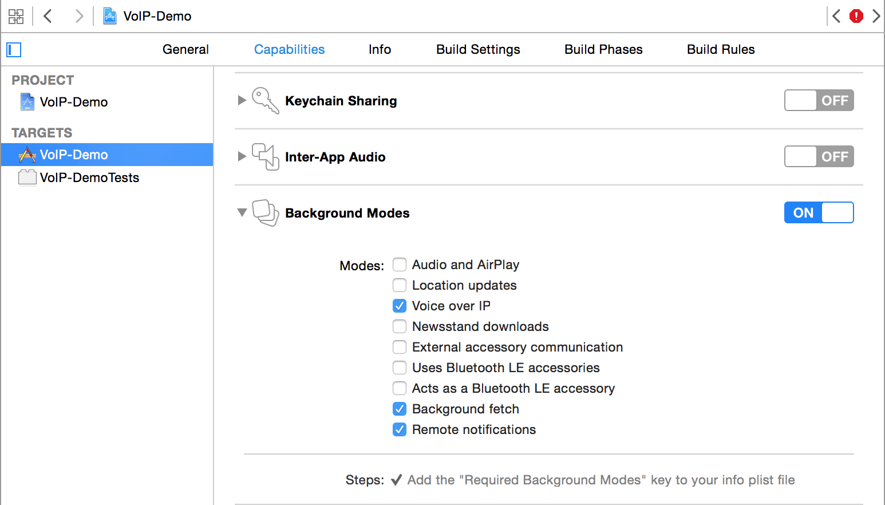
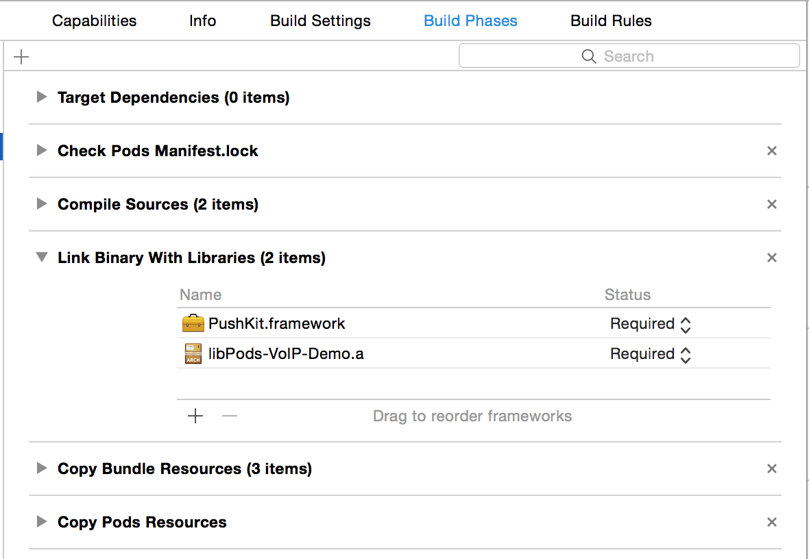

What PushKit does and why you should use it.
In iOS 8 Apple introduced PushKit as part of their effort to improve battery life, performance, and stability for VoIP applications such as Skype, WhatsApp, and LINE.
Previously, VoIP apps needed to maintain a persistent connection in order to receive calls. Keeping a connection open in the background, drains the battery as well as causes all kinds of problems when the app crashes or is terminated by the user.
PushKit is meant to solve these problems by offering a high-priorty push notification with a large payload. The VoIP app receives the notification in the background, sets up the connection and displays a local notification to the user. When the user swipes the notification, the call is ready to connect.
This guide will walk you through the steps to setup a VoIP application. We'll be using Swift to implement this example. Source files from this example are available on GitHub.
Differences from regular APNS Push Notifications
VoIP push notifications are different than regular APNS notifications mainly in how they are setup from the iOS app.
Instead of using application.registerForRemoteNotifications() and handling the received notifications in
application:didReceiveRemoteNotification, we use PushKit and the
PKPushRegistryDelegate to request a device token and handle the delegate
methods.
Unlike regular push notifications, PushKit does not prompt the user
to accept VoIP pushes. PushKit will always grant a device token to apps
that have the VoIP entitlements without asking for approval. Further, VoIP
pushes do not have any UI and do not show an alert. They act more like content-available pushes,
and you must handle the received notification and present a local notification.
| Regular Push | VoIP Push | |
|---|---|---|
| Getting Device Token | application.registerForRemoteNotifications() |
set PKPushRegistry.desiredPushTypes |
| Handle Registration | application:didRegisterForRemoteNotificationsWithDeviceToken: |
pushRegistry:didUpdatePushCredentials |
| Handle Received Notification | application:didReceiveRemoteNotification |
pushRegistry:didReceiveIncomingPushWithPayload |
| Payload Size | 2048 bytes | 4096 bytes |
| Certificate Type | iOS Push Services | VoIP Services |
| Requires User Consent | Yes | No* |
* The user must agree to receive local notifications.
Certificate, App Id, and Entitlements
These are pre-requisites for setting up VoIP with ZeroPush.
- Make sure your app has an explicit app id and push entitlements in Apple's Developer Portal.
- Create a VoIP Push Certificate. This can be re-used for development and production. 
- Import the VoIP Push Certificate into Keychain Access and export as a .p12 file.
- Create an iOS app in ZeroPush and upload the VoIP push certificate for both Production and Development environments.
- Make sure you have the correct Background Modes in XCode: 
Adding PushKit
Link PushKit.framework 
Import and add Delegate methods
//AppDelegate.swift
import PushKit
import ZeroPush
class AppDelegate: UIResponder, UIApplicationDelegate, PKPushRegistryDelegate, ZeroPushDelegate {
func registerVoipNotifications() {
let voipRegistry: PKPushRegistry = PKPushRegistry(queue: dispatch_get_main_queue())
voipRegistry.delegate = self
voipRegistry.desiredPushTypes = NSSet(object: PKPushTypeVoIP)
NSLog("VoIP registered")
let types: UIUserNotificationType = (UIUserNotificationType.Badge | UIUserNotificationType.Sound | UIUserNotificationType.Alert)
let notificationSettings = UIUserNotificationSettings(forTypes:types, categories:nil)
UIApplication.sharedApplication().registerUserNotificationSettings(notificationSettings)
}
func pushRegistry(registry: PKPushRegistry!, didUpdatePushCredentials credentials: PKPushCredentials!, forType type: String!) {
let voipZeroPush = ZeroPush()
#if DEBUG
voipZeroPush.apiKey = "iosdev_xxxxxxxxxxxxxxxxxxxx"
#else
voipZeroPush.apiKey = "iosprod_xxxxxxxxxxxxxxxxxxx"
#endif
voipZeroPush.registerDeviceToken(credentials.token, channel: "me")
NSLog("subscribed `%@` to channel `me`", ZeroPush.deviceTokenFromData(credentials.token))
}
func pushRegistry(registry: PKPushRegistry!, didReceiveIncomingPushWithPayload payload: PKPushPayload!, forType type: String!) {
let data = payload.dictionaryPayload
NSLog("%@", data)
let notification = UILocalNotification()
//setup the notification
let aps = (data["aps"] as [NSString: AnyObject])
notification.alertBody = aps["alert"] as NSString!
notification.category = aps["category"] as NSString!
//show the notification
UIApplication.sharedApplication().presentLocalNotificationNow(notification)
}
func application(application: UIApplication, didFinishLaunchingWithOptions launchOptions: [NSObject: AnyObject]?) -> Bool {
//register for voip notifications. This can be placed somewhere else in your code.
registerVoipNotifications()
return true
}
}
Sending a notification
Once your VoIP certificate is configured, try sending the request with cURL from the command-line
$ curl https://api.zeropush.com/broadcast/me \
-d 'auth_token=ios-server-token' \
-d 'alert=World Calling' \
-d 'info[hello]=world'
Or you can use our API Explorer tool.
VoIP Demo Project
To test VoIP push on your own device, check out the demo project: https://github.com/ZeroPush/VoIP-Demo